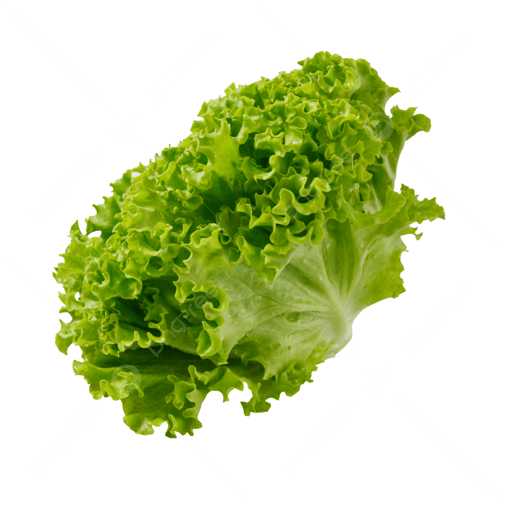

Blog de la Huerta

Cómo cultivar tomates orgánicos
Descubre los mejores consejos para cultivar tomates frescos y saludables en tu huerta urbana.
Leer más

Beneficios de la lechuga fresca
Conoce las propiedades nutricionales y cómo aprovechar la lechuga en tus comidas diarias.
Leer más
Frutas y verduras de temporada
Aprende a identificar y consumir productos de temporada para una alimentación más sana y sostenible.
Leer más